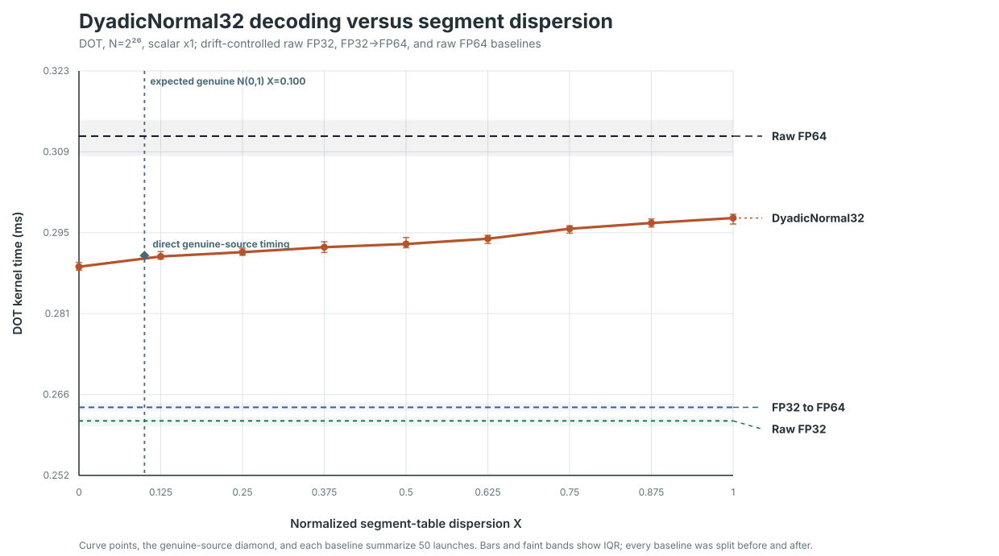

DyadicNormal32 dispersion benchmark
This run isolates whether a 512-byte coefficient decoder changes speed when warps spread their accesses across more dyadic segments. Raw FP32, FP32 storage converted to FP64 arithmetic, and raw FP64 all use the same DOT geometry, executable, GPU allocation, and timing method. A separately generated genuine-standard-normal point checks the bank-access pattern that the one-dimensional X metric cannot capture.
N=2^26, scalar x1 DOT
N(0,1) source has expected X=0.100, measured X=0.100, and takes 0.290672 ms: 1.100× FP32→FP64 and 0.933× raw FP64. Across the artificial hot-plus-uniform sweep, the slowest median is 1.029× the fastest. No crossover. DyadicNormal32 is faster at every measured X.Baselines
| Storage and arithmetic | Median ms | Q1 ms | Q3 ms | / raw FP64 |
|---|---|---|---|---|
| Raw FP64 | 0.311504 | 0.308008 | 0.314328 | 1.000× |
| Raw FP32 | 0.261824 | 0.260864 | 0.262544 | 0.841× |
| FP32 to FP64 | 0.264192 | 0.263576 | 0.265024 | 0.848× |
Measured points
| Target X | Actual X | Unique h / warp | Median ms | Q1 ms | Q3 ms | / raw FP64 |
|---|---|---|---|---|---|---|
| 0.000 | 0.000000 | 1.0000 | 0.288720 | 0.288104 | 0.289472 | 0.927× |
| 0.125 | 0.124977 | 3.4263 | 0.290512 | 0.290056 | 0.291352 | 0.933× |
| 0.250 | 0.250007 | 5.8537 | 0.291264 | 0.290720 | 0.291952 | 0.935× |
| 0.375 | 0.375024 | 8.2808 | 0.292128 | 0.291208 | 0.293080 | 0.938× |
| 0.500 | 0.500045 | 10.7080 | 0.292688 | 0.292032 | 0.293816 | 0.940× |
| 0.625 | 0.625035 | 13.1346 | 0.293600 | 0.292768 | 0.294208 | 0.943× |
| 0.750 | 0.750073 | 15.5621 | 0.295344 | 0.294560 | 0.295864 | 0.948× |
| 0.875 | 0.875034 | 17.9881 | 0.296352 | 0.295656 | 0.297048 | 0.951× |
| 1.000 | 1.000040 | 20.4150 | 0.297216 | 0.296168 | 0.297880 | 0.954× |
| genuine N(0,1) | 0.100180 | 2.9449 | 0.290672 | 0.289832 | 0.290968 | 0.933× |
Exact format convention
Bit 31 is the sign. Bits 30 through 0 are the magnitude rank r. Counting leading one bits in r gives segment h. For h=0…30, the zero delimiter is followed by 30-h payload bits l. Segment boundaries split the half-normal code-point density with σ=√3 into tail probabilities 2^-h. Each segment uses midpoint-spaced linear reconstruction fma(double(l), B[h], A[h]). The all-ones magnitude rank is h=31,l=0 and maps to the finite 2^-32 tail boundary, approximately 10.978 for source σ=1. The 32 coefficient pairs occupy exactly 512 bytes and are staged in shared memory once per timed first-stage block.
For 32 segment entries, X=(E[unique h per warp]-1)/(E[unique h under uniform draws]-1). Sweep codes use a deterministic mixture of hot segment zero and uniform segment draws. The solver chooses mixture probability q for every target X. The genuine point samples the actual segment probabilities induced by an N(0,1) source. It is timed directly because equal X values can still map to different shared-memory bank conflicts. Payload bits and signs are independently randomized; left and right arrays use independent seeds. Each point is split between an ascending and descending pass. Every baseline is likewise split before and after the sweep, with the after order reversed to limit drift bias.